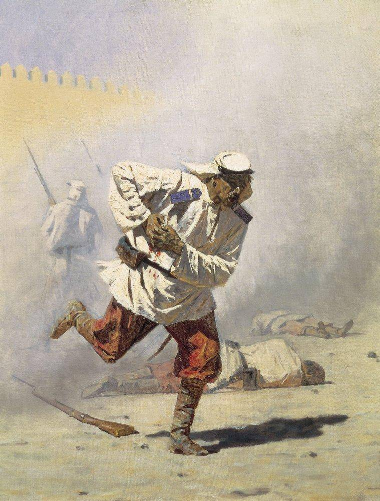
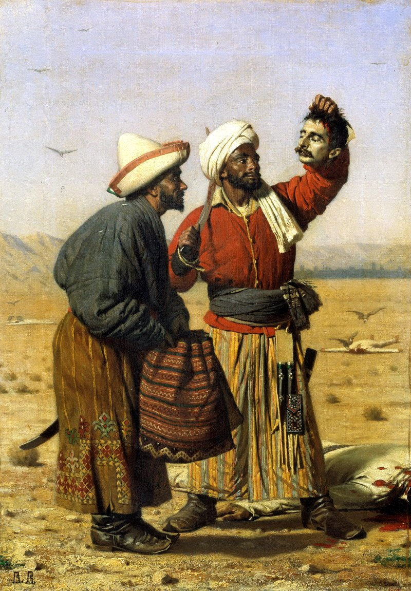

"Апофеоз войны", 1871г.
Изначально полотно называлось «Торжество Тамерлана». Замысел был связан с Тамерланом, войска которого оставляли за собой такие пирамиды черепов, однако картина не носит конкретно-исторический характер. Согласно истории, однажды к Тамерлану обратились женщины Багдада и Дамаска, которые жаловались на своих мужей, погрязших в грехах и разврате. Тогда он приказал каждому воину из своей 200-тысячной армии принести по отрубленной голове мужей-развратников. После того, как приказ был исполнен, было выложено семь пирамид из голов. По другой версии, картина была создана Верещагиным под впечатлением рассказа о том, как правитель Кашгара Валихан-торе казнил европейского путешественника и приказал положить его голову на вершину пирамиды, сложенной из черепов других казненных людей.

"Смертельно раненный",1873 г.
Своими полотнами художник нисколько не восхищался. Его работы трагичны тем, что в них рассказано, но не тем, как это рассказано. С жаждой ученого, исследователя, историка, военного репортера и только потом уже художника он проникал в самое сердце военных действий. Был не просто наблюдателем, а участником сражений, являясь собой мужественным примером того, каким должен быть настоящий военный репортер — баталист:
«Выполнить цель, которою я задался, а именно: дать обществу картины настоящей, неподдельной войны нельзя, глядя на сражение в бинокль из прекрасного далека, а нужно самому все прочувствовать и проделать, участвовать в атаках, штурмах, победах, поражениях, испытать голод, холод, болезни, раны… Нужно не бояться жертвовать своею кровью, своим мясом – иначе картины мои будут «не то».
"После удачи", 1868 г.
Свое боевое крещение, Верещагин получил в 25 лет, в Самарканде.
В 1867 году с радостью принял приглашение Туркестанского генерал-губернатора генерала К. П. Кауфмана состоять при нём художником. Приехав в Самарканд после взятия его русскими войсками 2 мая 1868 года, Верещагин выдержал с горстью русских солдат тяжёлую осаду этого города восставшими местными жителями. Выдающаяся роль Верещагина в этой обороне доставила ему орден Святого Георгия 4-го класса (14 августа 1868 года), который он с гордостью носил, хотя вообще отрицал всякие награды:
«Во время восьмидневной осады Самаркандской цитадели скопищами Бухарцев, прапорщик Верещагин мужественным примером ободрял гарнизон. Когда 3-го Июня неприятель в огромных массах приблизился к воротам и кинувшись на орудия успел уже занять все сакли, прапорщик Верещагин, несмотря на град камней и убийственный ружейный огонь, с ружьём в руках бросился и своим геройским примером увлёк храбрых защитников цитадели.»